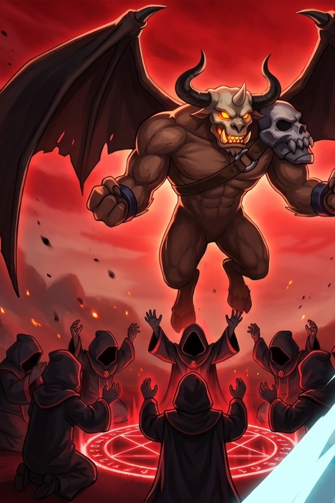
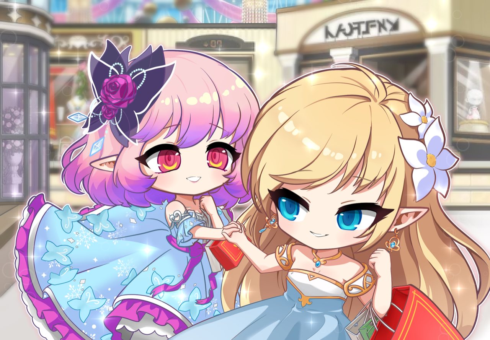
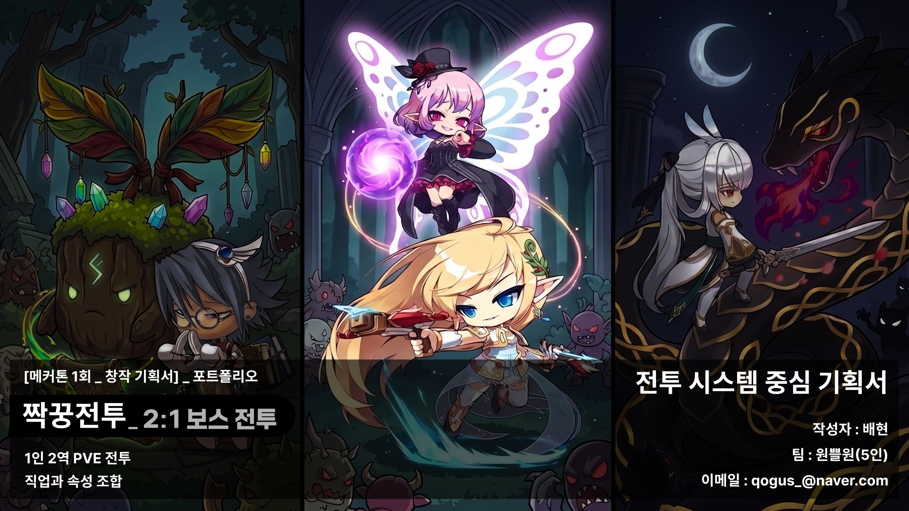
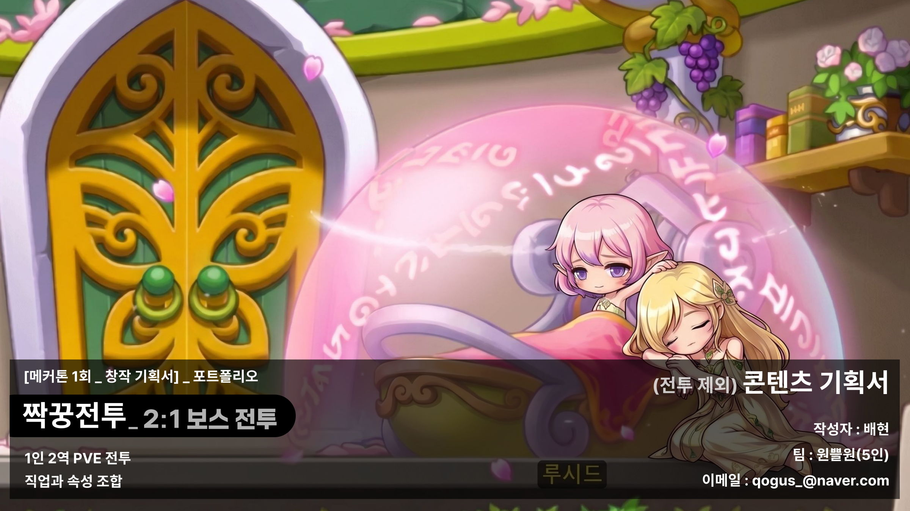
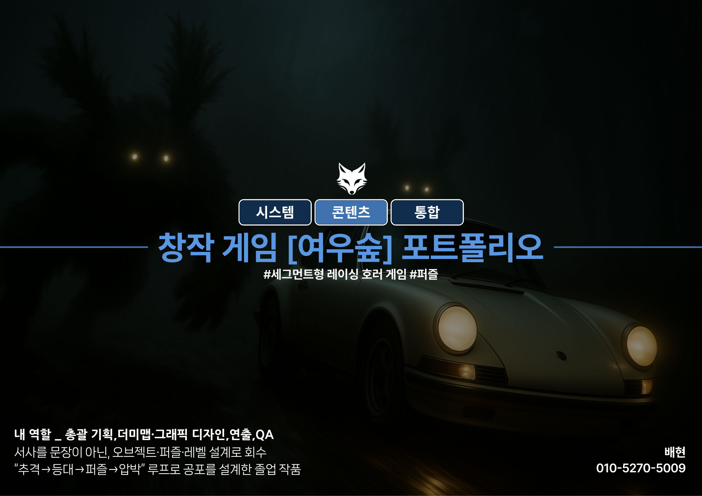

새로운 업데이트
3
누크발 NEW 출시 및 업데이트 중누적 플레이어 14명 (8월 28일)
언리얼 맵 제작
던전 RPG 제작완료
맵 3종 · 도면 4장 · 영상 3편

원쁠원 LIVE 라이브 지표 갱신누적 플레이어 37명 (8월 28일)
7카드를 눌러 상세로
최근 작업
RECENT모든 프로젝트
8 역기획서83.4시간
오픈월드 속 던전 - 퀘스트 데이터
퀘스트 역기획 · [호라이즌] 가마솥 SIGMA
BASE호라이즌: 제로 던
PLAY83.4시간
DOC요약 16p · 원본 24p
역기획서83.4시간
오픈월드 속 던전 - 퀘스트 데이터
퀘스트 역기획 · [호라이즌] 가마솥 SIGMA
BASE호라이즌: 제로 던
PLAY83.4시간
DOC요약 16p · 원본 24p
 역기획서LV.60 만렙
왜 던전을 물에 잠갔을까
레벨 역기획 · [엔드필드] 무릉 천정원 지하
BASE명일방주: 엔드필드
PLAYLV.60 만렙 · 종결 올클리어
DOC요약 18p · 원본 36p
역기획서LV.60 만렙
왜 던전을 물에 잠갔을까
레벨 역기획 · [엔드필드] 무릉 천정원 지하
BASE명일방주: 엔드필드
PLAYLV.60 만렙 · 종결 올클리어
DOC요약 18p · 원본 36p
 제안서LV.60 만렙
[엔드필드] 6성 뱅가드 제안서
캐릭터 기획 · 스킬셋 · 리소스 계획
BASE명일방주: 엔드필드
PLAYLV.60 만렙 · 종결 올클리어
DOC원본 32p
제안서LV.60 만렙
[엔드필드] 6성 뱅가드 제안서
캐릭터 기획 · 스킬셋 · 리소스 계획
BASE명일방주: 엔드필드
PLAYLV.60 만렙 · 종결 올클리어
DOC원본 32p
 제안서숙련도 20만+
니달리를 MMORPG로 번역하다
캐릭터 기획 · 신규 캐릭터 · 비선형 퀘스트
BASE리그 오브 레전드
PLAY숙련도 20만+ · 12년째
DOC원본 16p
제작블루 프린트
언리얼 맵 제작
레벨 디자인 · FPS 2종 + RPG 1종
ENGINEUnreal Engine 5
SCALE맵 3종 · 도면 4장 · 영상 3편
STATUS블루 프린트 · 맵 3종 제작 완료
제작전시·배포 종료
동양풍 공포를 시스템화하다
통합 리드 기획 · [졸업전시회] 여우숲
ENGINEUnity 3D
SCALE10개월 · 2인 팀
STATUS전시·배포 종료 · 전시 134명
제작서비스 중 · 14명
“누가 크림슨 발록을 소환했는가”
소셜 추리 룰 기획 · [MSW] 누크발
ENGINEMapleStory Worlds
SCALE17일 · 99 커밋 · 기획 1인
STATUS서비스 중 · 누적 14명
제작서비스 중 · 37명
“1인 2역의 새로운 전투 문법”
통합 리드 기획 · [넥슨-메커톤] 원쁠원
ENGINEMapleStory Worlds
SCALE3주 · 5인 팀 단독 기획
STATUS서비스 중 · 누적 37명
제안서숙련도 20만+
니달리를 MMORPG로 번역하다
캐릭터 기획 · 신규 캐릭터 · 비선형 퀘스트
BASE리그 오브 레전드
PLAY숙련도 20만+ · 12년째
DOC원본 16p
제작블루 프린트
언리얼 맵 제작
레벨 디자인 · FPS 2종 + RPG 1종
ENGINEUnreal Engine 5
SCALE맵 3종 · 도면 4장 · 영상 3편
STATUS블루 프린트 · 맵 3종 제작 완료
제작전시·배포 종료
동양풍 공포를 시스템화하다
통합 리드 기획 · [졸업전시회] 여우숲
ENGINEUnity 3D
SCALE10개월 · 2인 팀
STATUS전시·배포 종료 · 전시 134명
제작서비스 중 · 14명
“누가 크림슨 발록을 소환했는가”
소셜 추리 룰 기획 · [MSW] 누크발
ENGINEMapleStory Worlds
SCALE17일 · 99 커밋 · 기획 1인
STATUS서비스 중 · 누적 14명
제작서비스 중 · 37명
“1인 2역의 새로운 전투 문법”
통합 리드 기획 · [넥슨-메커톤] 원쁠원
ENGINEMapleStory Worlds
SCALE3주 · 5인 팀 단독 기획
STATUS서비스 중 · 누적 37명
MAPLESTORY WORLDS · 넥슨-메커톤
원쁠원 (1+1)
1인 2역의 새로운 전투 문법
기획서 원본 · 영상표지를 누르면 문서가, 영상을 누르면 재생이 바로 시작됩니다

COMBAT전투디자인 기획서 전문34 페이지 · 조작 → 패턴 → 데이터 → 밸런싱
CONTENT서브콘텐츠 기획서 전문13 페이지 · 퀘스트 · 대사 데이터 · 스토리이건 무슨 게임인가
- 게임 장르
- 쿼터뷰 2:1 보스전 PVE · MapleStory Worlds
- 핵심 재미
한 명이 두 캐릭터를 번갈아 조종해, 스펙이 아니라 컨트롤로 보스를 잡는 맛
- 나의 역할
- 5인 팀 단독 기획 — 보스 패턴 7종 · 데이터 16종 · 퀘스트 8종
제작 여정
01“보고 피하는” 보스전
백어택 규칙을 콜라이더 4분할로 정의하고 배율을 1.5 → 2.0 으로 올렸습니다. 보스 패턴의 행동 규칙 전부를 기획 의도까지 붙여 적었습니다.
02코드를 열지 않고 밸런싱하는 구조
데이터를 4표로 분리해 수치 조정이 코드 수정 없이 끝나게 만들었습니다. 확정한 데이터 테이블은 16종입니다.
03지표로 돌린 밸런싱 루프
목표 TTK 3분 30초를 지표로 잡고 실제 처치 시간을 측정해 루프를 돌렸습니다. 관리 시트(sys 101)로 DPS를 산출했습니다.
048종 퀘스트, 2개 라인, 하나의 결말
퀘스트 8종의 데이터와 대사 250행+ 를 전량 작성하고, 경제(메소 50만)와 보상을 역산해 배분했습니다.
055인 팀을 굴린 관리 체계 · 3주 풀 루프 데모
3주 해커톤에서 5인 팀의 단독 기획자로 규칙 언어로 쓴 기획서를 그대로 게임까지 완주했습니다.
노트 — 역할 경계
내가 설계·작성MINE
- 보스 패턴 행동 규칙 전부 (기획 의도 포함)
- 백어택 규칙 · 다이얼로그 4표 분리 스키마
- 퀘스트 8종 데이터·대사 전량 (250행+)
- 경제(메소 50만)·보상 역산 배분
- 밸런싱 루프 (TTK 3:30) · 데이터 16종 중 8종
내 것이 아님NOT MINE
- mLua 구현 전체 (156파일)
- 플랫폼 제약 우회 구조 (QuestBridge)
- 협업 확정 — 드라이기 각도 180°
- 협업 확정 — 이동속도 · 분리거리 클램프
내 평가 — 스스로 그은 경계
구현(mLua)은 개발 파트입니다. 기획서가 그대로 게임이 된 것이지, 제가 만든 코드는 아닙니다.
라이브 지표는 누적 37명 · 좋아요 85%(평가 6건)입니다. 표본이 작다는 것도 함께 적어 둡니다.
MAPLESTORY WORLDS · MSW 글로벌 개발 콘테스트 출품작
누크발 (누가 크림슨 발록을 소환했는가)
검증된 룰에 콘텐츠를 입히다
기획서 원본
해당 프로젝트는 별도의 기획서가 없습니다.
이건 무슨 게임인가
- 게임 장르
- 6·8인 소셜 추리 · MapleStory Worlds
- 핵심 재미
누가 거짓말을 하는지 공개 기록판 위에서 몰아가는 심리전
- 나의 역할
- 기획 전담 1인 — 룰 · 14 페이즈 상태 머신 · 정보 공개 · BM
제작 여정
01검증된 룰을 IP로 이식
『레지스탕스: 아발론』의 규칙을 메이플 IP 문법으로 옮겼습니다. 룰을 새로 발명하는 대신 이미 검증된 것 위에 콘텐츠를 얹는 선택이었습니다.
0214 페이즈 상태 머신
진행 전부를 14개 페이즈로 못 박아 예외 상황이 생기지 않게 했습니다.
03정보 공개 범위 설계
누가 무엇을 언제 보는지를 표로 확정했습니다. 거짓말이 기록에 남아야 추리가 성립합니다.
0417일 · 99 커밋 출시
기획 전담 1인으로 출시까지 끌고 갔고, 8월 28일 기준 누적 플레이어 14명입니다.
노트 — 역할 경계
내가 설계·작성MINE
- 룰 이식 판단 · 14 페이즈 상태 머신
- 정보 공개 범위 · 역할 구성
- BM 설계 · 콘텐츠 전량
내 것이 아님NOT MINE
- mLua 구현 — AI 에 지시해 받았습니다
- 아트 — MSW 제공 에셋 재구성
- 원 룰 — 『레지스탕스: 아발론』
내 평가 — 스스로 그은 경계
17일은 기획 판단의 속도였지 코드의 속도가 아닙니다. 페이즈 상태 머신과 정보 공개 범위는 제가 1인으로 확정했고, mLua 구현은 AI가 썼습니다.
UNITY 3D · 졸업전시회
여우숲
동양풍 공포를 시스템화하다
기획서 원본 · 영상표지를 누르면 문서가, 영상을 누르면 재생이 바로 시작됩니다

ORIGINAL통합 기획 포트폴리오 전문26 페이지 · 시스템 → 이벤트 → 레벨·서사 → 검증이건 무슨 게임인가
- 게임 장르
- 공포 × 레이싱 × 퍼즐 · Unity 3D
- 핵심 재미
쫓기며 달리는 압박과, 등대를 켜 잠시 숨 돌리는 안도의 교차
- 나의 역할
- 2인 팀 총괄 기획 — 시스템 · 콘텐츠 · 연출 · QA
제작 여정
01세 장르를 하나의 루프로
공포 · 레이싱 · 퍼즐이 따로 놀지 않도록 한 개의 코어 루프 안에 묶었습니다. 공포게임의 '실내 · 저속' 문법을 야외 고속 추격으로 뒤집은 것이 출발점입니다.
02사망 조건을 단일 타이머로
죽는 방식이 늘어날수록 배워야 할 규칙도 늘어납니다. 모든 사망을 하나의 타이머 규칙으로 통일했습니다.
03서면 테스트 9명 길 잃음 0회
피드백을 수정 로그로 반영해 동선을 좁혔습니다.
04졸업전시 134명+ · 평균 15분
사람을 앉혀 놓고 잰 수치로 마감했습니다.
노트 — 역할 경계
내가 설계·작성MINE
- 코어 루프 · 사망 규칙 통일
- 콘텐츠 · 연출 · 레벨 동선
- 테스트 설계 · QA · 수정 로그
내 것이 아님NOT MINE
- Unity 구현 · 아트 — 팀원 담당
내 평가 — 스스로 그은 경계
서면 테스트 9명의 피드백을 수정 로그로 반영해 길 잃음 0회까지 좁혔고, 최종 전시에서 134명+ · 평균 15분으로 안정화했습니다. 다만 긴장 곡선은 스스로 '아쉬움'으로 판정했습니다.
UNREAL ENGINE 5 · 레벨 디자인 학습 기록
언리얼 맵 제작
평면에서 정하고, 블록아웃으로 확인합니다
기획서 원본
해당 프로젝트는 별도의 기획서가 없습니다.
MAP 03성채형 RPG 맵창작 · 셋 중 가장 최근에 가장 크게 만든 맵
STEP 01 · PLAN — 설계 평면1 / 2


BUILD — 제작 과정 영상
MAP 02리조트 풀 정원창작 · 현실 공간을 FPS 공간으로 번역
PLAN — 구글어스 위성 이미지 위 평면도

BUILD — 제작 과정 영상
MAP 01Shipment모작 · 『콜 오브 듀티』 맵을 1.8m 척도로 재현
BLOCKOUT — 에디터 블록아웃

BUILD — 결과물 영상
이건 무슨 작업인가
- 나의 역할
- 1인 — 설계 · 블록아웃 · 촬영 전부
제작 여정
03성채형 RPG 맵 창작
랜드마크 · 삼각형의 법칙 · 40초 · 병렬 구조 · 점진적 난이도 다섯 규칙으로 세운, 셋 중 가장 최근에 가장 크게 만든 맵입니다.
02리조트 풀 정원 창작
현실 공간을 교전 거리 · 엄폐 · 회전 동선으로 번역했습니다.
01Shipment 모작
『콜 오브 듀티』의 맵을 캐릭터 1.8m 기준 실측 크기로 재현하며 문법을 익혔습니다.
노트 — 역할 경계
내가 설계·작성MINE
- 맵 3종의 평면 설계 · 치수 결정
- 블록아웃 · 라이팅 · 촬영
- 1.8m 척도 기준 교전 거리 · 엄폐 · 시야선
내 것이 아님NOT MINE
- 없음 — 설계부터 촬영까지 1인입니다
- MAP 01 은 원작(『콜 오브 듀티』 Shipment) 모작입니다
내 평가 — 스스로 그은 경계
유니티는 「여우숲」으로, MSW 는 「원쁠원」으로 증명했습니다. 언리얼은 맵 3종으로 공간 설계까지 증명했고, 다음 과제는 블루 프린트입니다.
HORIZON ZERO DAWN · 퀘스트 역기획
가마솥 SIGMA
오픈월드 속 던전 - 퀘스트 데이터
역기획서 원본표지를 누르면 문서가 바로 펼쳐집니다


어떤 게임을 뜯었나
- 게임 장르
- 호라이즌: 제로 던 · 오픈월드 액션 RPG
- 핵심 재미
거대 기계 짐승의 부위를 활과 덫으로 부숴 약점을 만들고 사냥하는 쾌감
내가 집중한 과제
이야기가 목표 · 동선 · 전투 · 보상 네 축으로 내려오는 경로를 스텝 · 트리거 · 배치 데이터로 복원했습니다. 진입 경로에 따라 대사가 어긋나는 문제 1건은 개선안까지 붙였고, 긴장 곡선 9 비트는 '훌륭'으로 판정했습니다.
내 평가 — 스스로 그은 경계
플레이 관찰을 기획서 형식으로 옮긴 문서입니다. 원작의 실제 내부 데이터가 아니며, 추정이 섞인 대목은 문서에 그렇게 표기했습니다.
ARKNIGHTS: ENDFIELD · 레벨 역기획
무릉 천정원 지하
왜 던전을 물에 잠갔을까
역기획서 원본표지를 누르면 문서가 바로 펼쳐집니다


어떤 게임을 뜯었나
- 게임 장르
- 명일방주: 엔드필드 · 오픈월드 액션 RPG + 공장 자동화
- 핵심 재미
자동화 공장을 지어 자원을 굴리고, 그 자원으로 파티 액션 전투를 돌리는 순환
내가 집중한 과제
이 던전의 물 = 자물쇠 구조를 콘셉트 → 상세 → 제안 3부로 복원했습니다. 수위 3단 변화가 잠금장치이고 중앙 보이드가 세 역할을 겸합니다. 전투가 비는 구간에서 긴장이 내려앉는 지점을 곡선으로 진단했고, 판정은 '실패'입니다.
내 평가 — 스스로 그은 경계
만렙 · 종결 콘텐츠까지 밀어 본 뒤에 쓴 문서입니다. 그래도 수치는 플레이 관찰로 복원한 것이지 원작의 내부 데이터가 아닙니다.
ARKNIGHTS: ENDFIELD · 6성 뱅가드 캐릭터 제안
헤스티 HESTI
적의 공격을 파티의 자원으로
제안서 원본표지를 누르면 문서가 바로 펼쳐집니다

어떤 게임을 뜯었나
- 게임 장르
- 명일방주: 엔드필드 · 오픈월드 액션 RPG + 공장 자동화
- 핵심 재미
자동화 공장을 지어 자원을 굴리고, 그 자원으로 파티 액션 전투를 돌리는 순환
내가 집중한 과제
열기 파티는 고점이 낮은 게 아니라 고점을 실행할 확률이 부족하다는 진단이 이 문서의 출발점입니다. 그 자리에 패링으로 적 공격을 파티 자원으로 바꾸는 6성 뱅가드를 제안하고, 스킬셋과 리소스 계획까지 붙였습니다.
내 평가 — 스스로 그은 경계
원작 1.3 ‘과거를 찾아서’에 열기 · 뱅가드 · 장병기 세 축이 같은 「카뮤」가 추가됐습니다. 이 문서는 1.3 예고 공개 전에 썼습니다.
다만 메커니즘은 서로 다릅니다 — 맞혔다고 말하지 않고, 그 차이까지 문서에 대조해 두었습니다.
LEAGUE OF LEGENDS · 캐릭터 · 내러티브 제안
니달리 응용 신규 캐릭터
아키타입을 해체해 새 캐릭터로 다시 세우기
제안서 원본표지를 누르면 문서가 바로 펼쳐집니다
어떤 게임을 뜯었나
- 게임 장르
- 리그 오브 레전드 · MOBA
- 핵심 재미
인간과 쿠거를 오가며 정글에서 상대를 노리고, 창 한 방으로 끝내는 손맛
내가 집중한 과제
‘보호’만 버튼이 되지 못했다 — 니달리의 서사가 스킬로 내려온 경로를 키워드 4개로 해체하고, ‘추적’이 통하지 않는 MMORPG PVE 에 맞춰 ‘몰이사냥꾼’으로 다시 세웠습니다. 그 위에 조사 루트 · 월드 스테이트 · 엔딩 3개의 비선형 퀘스트까지 설계했습니다.
내 평가 — 스스로 그은 경계
니달리를 고른 건 취향이 아니라 관측량입니다 — 2014년 시즌 4부터, 계정 3개 모두 챔피언 숙련도 20만 포인트를 넘겼고 매 시즌 200판 이상 플레이했습니다.
이건 무슨 게임인가
- 게임 장르
- 핵심 재미
이 리뷰가 다룬 것
STOVE 원문 — 스토브 페이지를 그대로 불러옵니다
본문을 이 화면 안에 불러오지 못했습니다
스토브 쪽 응답이 늦거나 임베드가 차단된 경우입니다. 아래 버튼으로 원문을 열 수 있습니다.
즐겨찾기가 비어 있습니다 — 왼쪽 목록에서 끌어다 놓거나 F 를 누르면 담깁니다.
—구독자
—총 조회수
—공개 영상
채널 「게임기획대학생」 — 플레이 영상 혹은 제작 프로젝트 설명 영상, 언리얼 자습 영상 등
특집 및 추천 영상
조회수가 높은 쇼츠
긴 영상은 설계를 설명하고, 조회수는 쇼츠가 가져갑니다 — 채널 최고 기록은 9만회입니다.
게임을 뜯어보는 일은 문서 밖에서도 이어집니다. 판정 프레임과 분기 노드를 직접 세어 본 시스템 실측 리뷰.
 턴제 RPG의 탈을 쓴 '리듬게임'…!?
클레르 옵스퀴르: 33 원정대
턴제 RPG의 탈을 쓴 '리듬게임'…!?
클레르 옵스퀴르: 33 원정대
회피 판정 0.22초 · 패링 판정 0.15초(9프레임) · 카운터 배율 245%를 실측해, "QTE가 전투의 핵심 구조"라는 주장을 수치로 증명한 전투 시스템 리뷰.
스토브에서 읽기 ↗ 2026.06 안생은 선택의 연속이다… 곧 다가올 미래?
디트로이트: 비컴 휴먼
안생은 선택의 연속이다… 곧 다가올 미래?
디트로이트: 비컴 휴먼
분기 종착 노드 85개를 직접 세고, 단어형 선택지와 플로우차트 공개 뒤에 숨은 기획 의도 — 예산 배분과 N회차 유도 — 를 역추적한 리뷰.
스토브에서 읽기 ↗ 2026.07 13시간 만에 처음 졌더니, 게임이 트로피를 줬다 카타클리스모성벽 한 구간마다 게임이 묻는 네 질문(어디에 · 무엇으로 · 얼마나 높게 · 얼마나 두껍게)을 짚고, 석재 4블록부터 붙는 '강화' 판정이 벽 높이를 4의 배수로 고정시키는 구조를 기록. 세이브·로드를 '시간의 닻'이라는 주인공의 능력으로 세계관 안에 들여놓은 설계 의도를 역추적한 리뷰.
스토브에서 읽기 ↗ 2026.08 땅 파서 돈 나오냐? / 나옵니다 DiDiDiG560일·63번의 죽음을 기록하고, 번 돈의 60%가 선물 거래로 흘러간 이유를 역추적한 리뷰. 손실이 전부 회복되는 설계라 위험이 딱 한 곳에 몰린 구조 — 용암 지대보다 기지가 위험해지는 이유.
스토브에서 읽기 ↗ 2026.07게임을 좋아해서 시작한 일들입니다.
주로 하는 게임
메인은 아니지만 ㅡ
6게임 개발 프로젝트
3라이브/배포 경험
4역기획서 · 제안서
12대외활동 이력
4수상
3교외 장학금
활동 — 게임
대내외 활동
26.06 ~ 26.07넥슨 메커톤
26.05 ~ 26.12스마일게이트 스토브크루 3기 게임 리뷰 보러가기 →
25.01 ~ 25.12게임제작 동아리 겜마루 기획부장
25.01 ~ 25.12게임제작 연합동아리 유니데브 대외협력부
25.12 ~ 26.02NC AI · Varco3D 크리에이터 1기
24.05 ~ 25.05졸업전시 프로젝트 「암흑의 여우숲」
24.05 ~ 24.08겜마루 여름공모전 「여우사냥」
24.03 ~ 24.12게임제작 동아리 겜마루 일반부원
24.11 (1일)컴투스 멘토링 스쿨
24.07 ~ 24.12재활용 교육 게임 기획 「다 먹어요 펠리컨」
24.07 ~ 24.12메타버스 게임 기획 「Lost Time」
21.07 ~ 21.12AR 콘텐츠 기획 「어린왕자 각색」
개인 연구 · 자습
Figma엔드필드 「간편제작 시스템」 UI 역기획 — 프로토타입 제작
Unreal언리얼 맵 제작 3종 제작 기록 →
Unreal오픈월드 맵 디자인 진행 중
분석니달리 내러티브 일관성 · 전투 설계 분석 제안서 보기 →
분석메이플스토리 「아이템 버닝」 이벤트 기획의도 분석
자습퀘스트 역기획 · 캐릭터 기획서 스터디
Unity유니티 · 마야 (+언리얼) 1인 개발 학습
수상 · 장학
펄어비스 최우수상 23.11 ~ 24.03
기업 솔루션 : 검은사막 모바일 크리에이터 활용 방안벨킨 코리아 최우수상 24.03 ~ 24.04
벨킨 마케팅 기획 프로젝트카카오 우수상 23.11 ~ 24.03
기업 솔루션 : 카카오톡 오픈채팅 이미지 개선안WISH 해커톤 장려상 24.05.11
여행 후, 앨범 정리 도움 앱 서비스 기획장학
25.03유당장학재단 장학생
25.06송영숙 교수 장학생
25.10제일하이텍재단 장학생
활동 — 대외
동아리
24.07 ~ 24.12구름톤 유니브 3기 기획부장
24.02 ~ 24.07광고기획 동아리 매드립 3기
24.02 ~ 24.07놀이문화 기획단 YOLO 3기
대외 활동
25.09 ~ 25.12네이버 클립 크리에이터 5기
24.09 ~ 24.11디자인솔솔 정기 전시회 「내유」 전시
24.02 ~ 24.03제일기획 아이디어 페스티벌 45th 참여
23.01 ~ 23.04군부대 성폭력 예방 UCC 기획
활동 — IT 서비스
25.02 ~ 25.05예비창업패키지 「DR.DRIVE」
25.03 ~ 25.07스냅비츠 화면 정의서 의뢰
24.08 ~ 24.11「Albaid」 숭실×중앙 · 연합
24.03 ~ 24.06「PINGU」 AI-Pin 앱 · 교내
학력 · 자격증
2026.02숭실대학교 IT글로벌미디어학부 졸업
2023.10병834기 공군 전역
2019.03서울고등학교 이공계 졸업
자격증
2024.12Adobe Premiere Pro 2023
2024.03콘텐츠 기획관리사 1급
2024.03홍보전략전문가 1급
2020.06Adobe Photoshop CC 2015
기술 · 도구
숙련도는 자기평가입니다 — 실제 증명은 위의 프로젝트들입니다.
협업
NotionLv.10
FigmaLv.10
SlackLv.8
GithubLv.7
문서
Google SheetLv.9
Power PointLv.9
WordLv.9
한글Lv.9
ObsidianLv.8
AI
MidjourneyLv.9
ImageFXLv.9
KlingLv.8
VEO3Lv.8
영상
VLLOLv.10
CapcutLv.10
NukeLv.6
AuditionLv.5
디자인
CanvaLv.10
PhotoshopLv.7
SNS
InstagramLv.10
YoutubeLv.9
Naver BlogLv.9